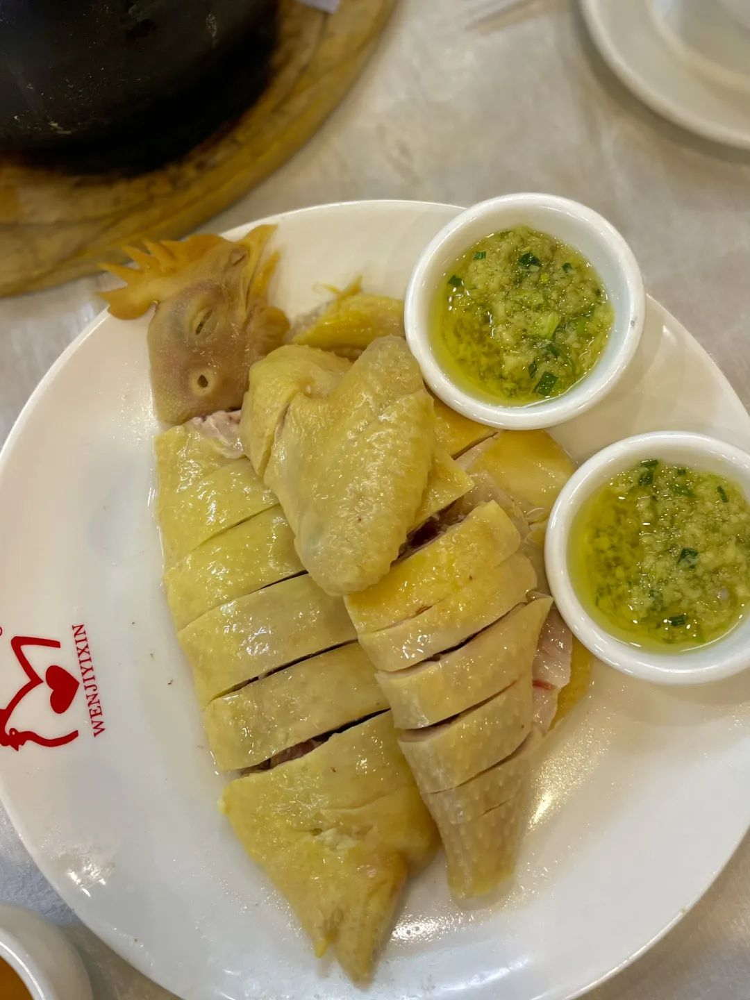
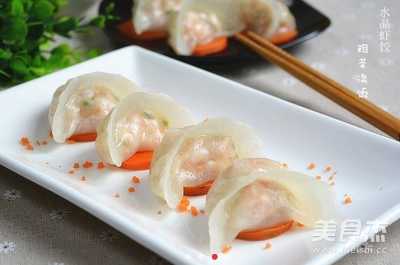

川菜
川菜REGIONAL FLAVOURS
四方菜系
每种地方风味都有自己的语言：调味、刀工、火候，以及与当地生活相连的饮食记忆。
SELECTED DISHES
十二道代表菜
按菜系筛选，打开每一道菜的独立页面，可以继续查看来历、原料、做法和关键火候。
川菜 川菜
川菜 川菜
川菜 鲁菜
鲁菜 鲁菜
鲁菜 鲁菜
鲁菜 粤菜
粤菜
粤菜
粤菜 湘菜
湘菜 湘菜
湘菜 湘菜
湘菜一方水土，写进一道菜里。今日风味 · DAILY TASTE
每种地方风味都有自己的语言：调味、刀工、火候，以及与当地生活相连的饮食记忆。
按菜系筛选，打开每一道菜的独立页面，可以继续查看来历、原料、做法和关键火候。
川菜川菜川菜鲁菜鲁菜鲁菜粤菜
粤菜
粤菜湘菜湘菜湘菜一方水土，写进一道菜里。今日风味 · DAILY TASTE